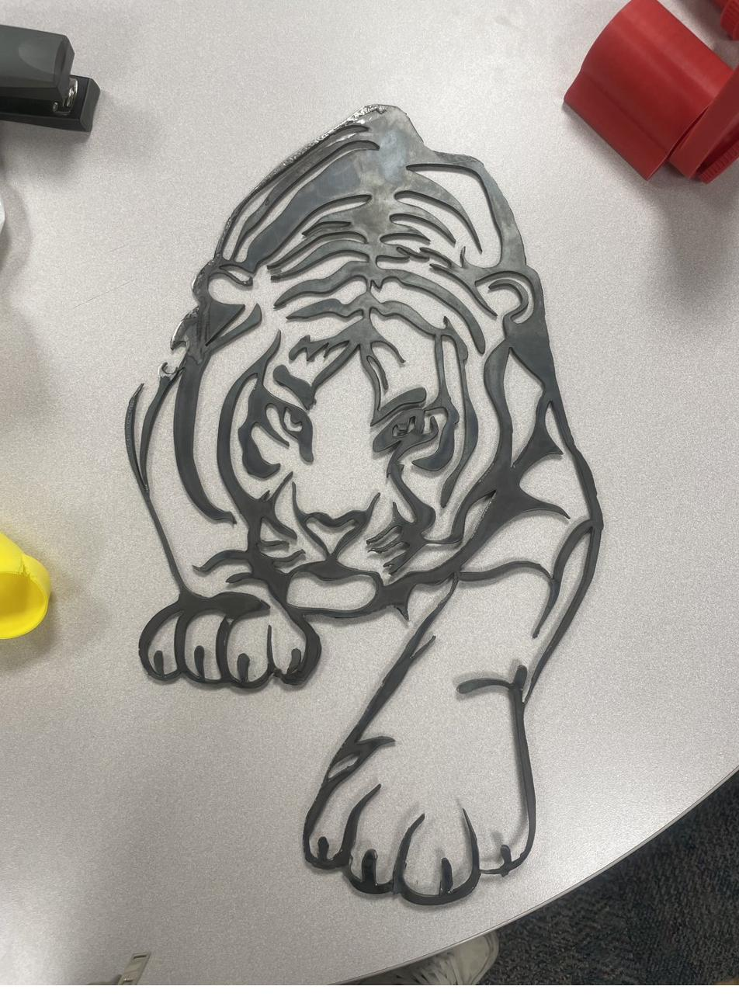
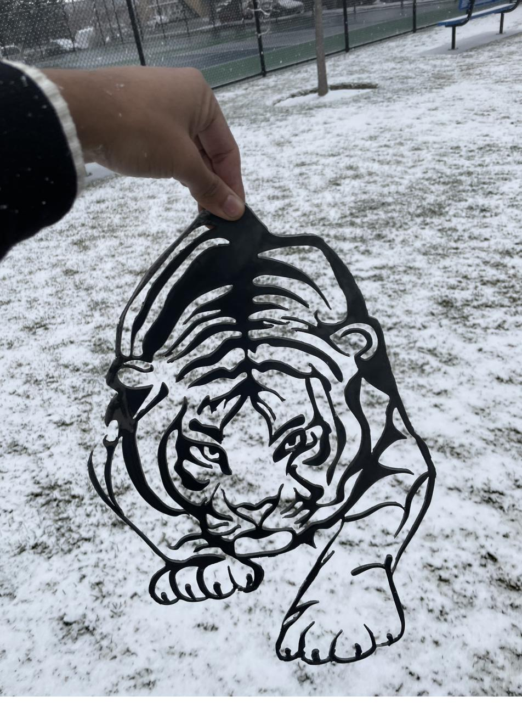

CAD · Sheet Metal · Fabrication
A detailed tiger traced into SolidWorks from a reference image, laser cut from quarter-inch steel, and hand-finished where the laser couldn't reach — a CAD-to-fabrication art piece.


A laser-cut steel tiger that runs the full path from image to finished part. I took a tiger reference image, imported it into SolidWorks, and traced it into a clean cut path, then had it laser cut from quarter-inch steel. Because the laser couldn't capture every fine detail in material that thick, I finished the tricky areas by hand and sanded the piece smooth. It started as a course assignment, but I picked something deliberately complex because I wanted to push the detail.
I imported a tiger PNG into SolidWorks and traced over it to build the geometry, then prepared the cut path for the laser cutter. The laser handled most of the outline, but at quarter-inch thickness it couldn't leave all the fine internal details clean — so I cut and refined those by hand with a saw and sanded the whole piece for a smoother finish. The plan is to color-coat it orange to finish the look.
The biggest takeaway was that a laser cutter has limits, and material thickness drives them — fine detail that looks clean on screen doesn't always survive a thick cut. Knowing when to hand the rest of the job to hand tools, and planning for that from the start, is part of designing for real fabrication. Tracing a complex image into clean CAD geometry also taught me how much patience precise sketch work takes.